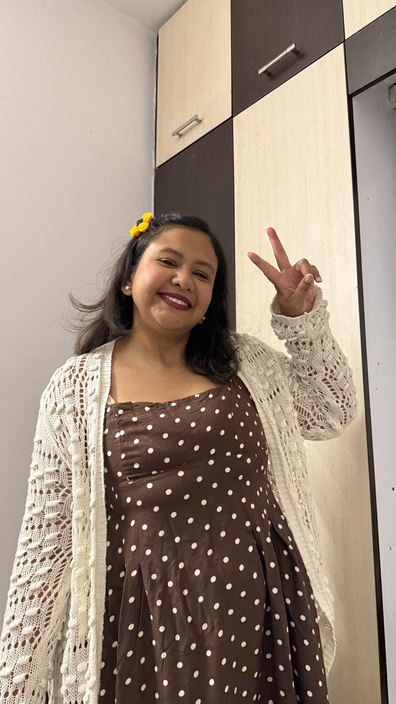
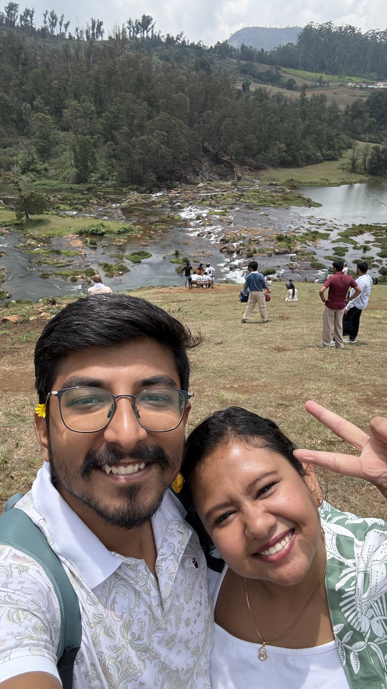
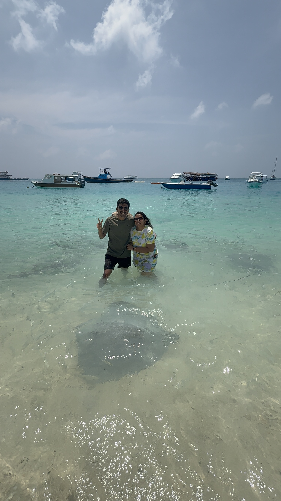
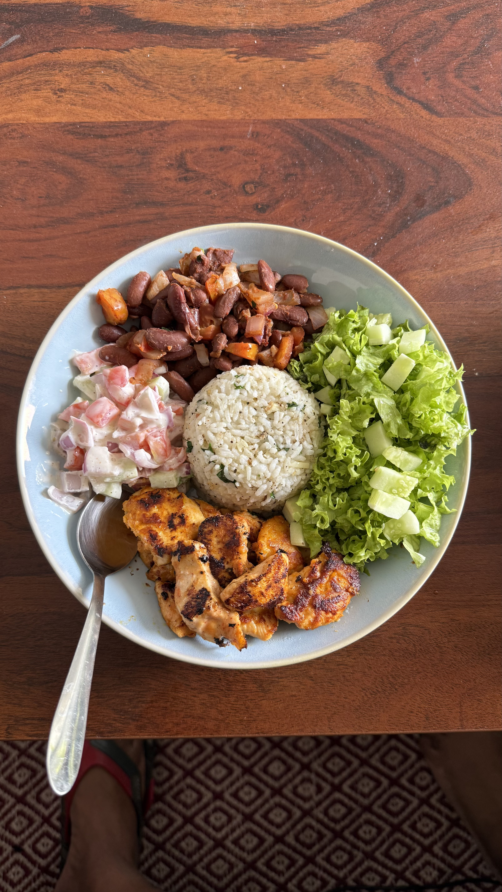
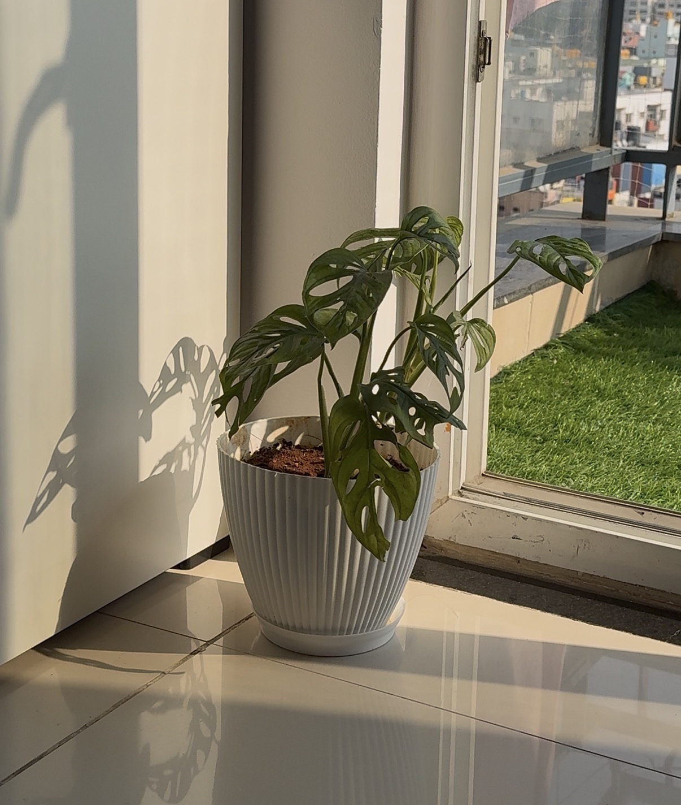
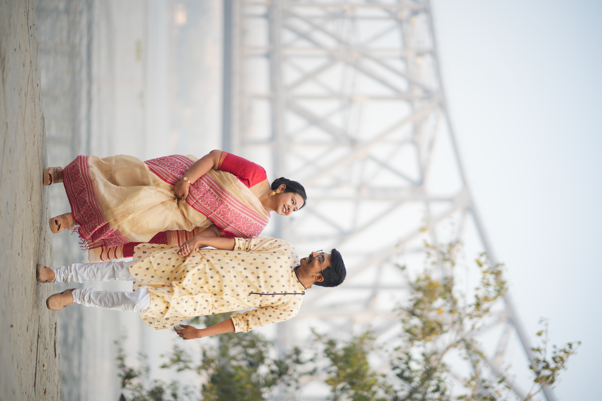
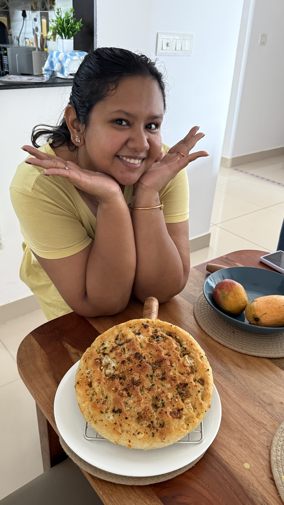
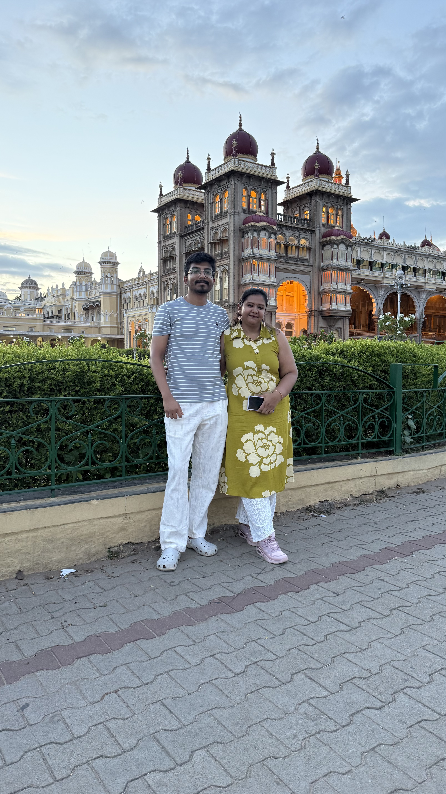
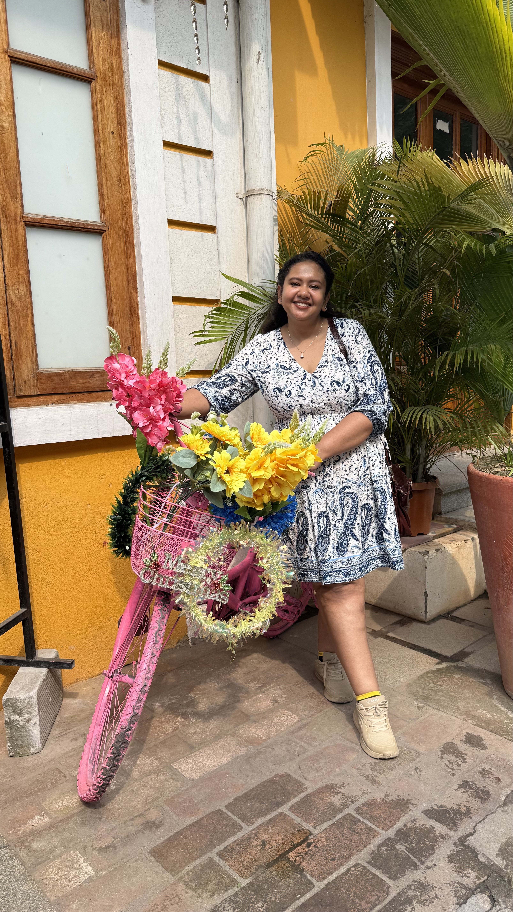
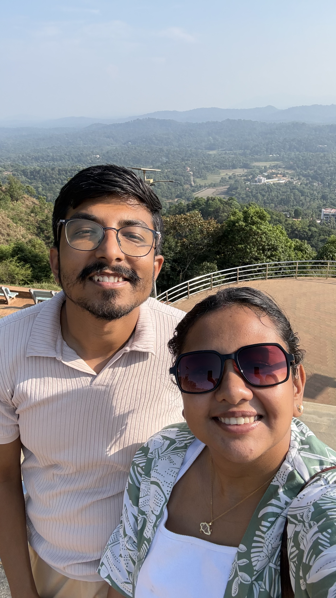

10 September 2026
For
Bub.
You turn 29 today and we are almost close to completing 8 years of our relationship! Damn.
An absolutely blissful time packed not only with loads of love, care, affection but also with fights and disagreements. Nevertheless, there's not a single universe where I would have chosen anything else.
I present this gift to you not because you are special today but you are SPECIAL every damn day in this world. I love you!
01 — You
You.
Your heart is always so full of love not just for the people close to you, but each and every being in your circle of life. Your heart leaps with joy when you spot our neighbour pug from our balcony, you scream with joy when you see a single leaf growing from the plant you have been taking care of. Your eyes glow with pride when you smell the bread after opening the microwave door. You make me want to become a better and kinder person.

02 — Us
All the ways
we became us.




The story of us actually becoming US is quite long and it starts from the day we posed as Chandler and Monica to have a sense of adventure at Starbucks. Was that the moment the universe said that 'yes, you both are meant to be'? I hope so. As each day
passes by and I explore the world a bit more, I feel more grateful that you chose me to be your life partner.
I am proud of us. When I look back to tingle my nostalgia, I stare at awe at the beautiful world we have built around us. I hope we can be happy and live our dream life till the end. This is just the beginning!
03 — 2026, So Far
2026,
so far.
Add a paragraph about the year you have shared so far: the moments that made it yours, the places you went, the small wins, or the ordinary days you want to remember.





04 — Little Things
A small collection
of favourites.
- 01
A tiny thing she does that always makes you smile.
- 02
A habit, phrase, or moment that feels unmistakably hers.
- 03
A place, song, food, or ritual you both come back to.
- 04
A recent memory you want to keep close.
- 05
One thing you hope she never forgets about herself.
05 — A Letter
My love,
This is where your letter goes. Keep it simple and honest: what you want to thank her for, what you love about sharing a life with her, and what you are looking forward to next.
There is no need to make it perfect. The best version will sound like you.
Always,
Your name